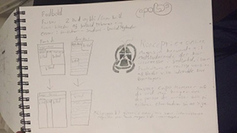
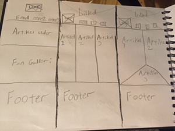
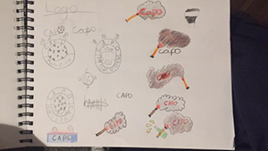
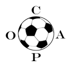

I er vores Case 2 skulle vi lave et online magasin som henvendte sig til vores medstuderende. Vi skulle skrive 3 artikler til et online magasin og lave siden til de 3 artikler.
Jeg havde en del overvejelser om hvad mit online magasin skulle handle om og nåede at skifte mening 1 gang midt i designprocessen. Det var ikke hensigtsmæssigt for min deadline og lyst til at lave onlinemagasinet, så en anden gang vil jeg gerne være mere beslutsom i min proces. Når det er sagt vil jeg altid gerne kunne tænke et projekt i flere spor. Men generelt skulle jeg have været mere beslutsom fra start.
Jeg valgte til sidst at lave et magasin om fodboldfan miljø. Det er et emne der interesserer mig rigtig meget, men jeg vidste at det måske ikke var noget som mange af mine medstuderende fandt interessant, men pga. min tøven til start i processen nåede jeg ikke at teste ideen ordentlig og få lavet min brugerprofil. Men da jeg har en del viden om miljøet og hvilke folk der kommer i det, fik jeg drejet onlinemagasinets koncept ind på at det skulle henvende sig til miljøet og mine medstuderende.
Design
Jeg gik først i gang med design. Selve processen var præget af ubeslutsomhed og som jeg har beskrevet er det noget jeg skal blive bedre til. Men jeg havde først skrevet i min notesbog nogen tanker om farver og wireframes samt koncept.
 Jeg tænkte at siden onlinemagasinet skulle have 3 artikler at den på en eller anden måde skulle være tredelt, men mine refleksioner over det er at jeg måske har låst mig ind på et design for tidligt. Jeg skulle måske have tænkt lidt mere bredt. Men altså det var det jeg synes var mest indlysende ved designet. Men jeg kom hurtigt ind på konceptet og det hjalp mig generelt meget til hvordan siden kom til at se ud.
Koncept
Siden koncept var at skabe et magasin til fanmiljøet der handlede om fan scenen omkring i Europa. Jeg lavede et moodboard som hjalp mig til at skabe en rød tråd imellem hvad siden handlede og hvordan den tog sig ud. Her er moodboarded.
Jeg tænkte meget i de røde farver som romerlysene skabte derudover tænkte jeg på tifoer som egentlig også er romerlys men også er alle slags fanaktiviteter før og efter kampen. Jeg tænkte at font mæssigt skulle siden have et mere urbant udtryk samt skulle siden skulle prøve at have stemning. Stemning var et vigtigt ord for mig i hele designprocessen. Jeg syntes at det var vigtigt at siden hele konceptet var omkring stemning at min side også havde stemning. Så det var de tanker jeg gjorde omkring selve designet. Jeg gik så videre til at designe wireframes og logo.
Wireframes ,Logo og Mockup
Som man kan se nedenunder var jeg meget fastsat på et tredelt design. Jeg ville meget gerne have det design som er helt ude til højre, men min design kunnen var ikke til det og samt tidspres gjorde at jeg gik med det midterste design til sidst.
 Jeg tænkte at det var et enkelt og nemt design at gå med og siden at jeg i forvejen vidste at jeg gerne vil have noget stemning over siden, var det også fint at der ikke foregik for meget linjemæssigt.
Jeg gik så videre til min logo proces. Hvilken også var præget af en del ubeslutsomhed. Min proces er egentlig meget godt illustreret på billedet nedenunder

Jeg startede med at designe et logo der tog udgangspunkt i at fanmiljøet var centreret omkring fodbold og derfor tænkte jeg at der skulle et eller andet med fodbold med i logoet derudover så tænkte jeg at man godt kunne designe det som et fodboldlogo. De første logodesigns som jeg tegnede var derfor runde og ”fodbold logoagtige”. Jeg synes at mange af de logoer blev for voldsomme og forstyrrende i forhold til hvad jeg havde i tankerne med siden. Derfor designede jeg et lidt mere simpelt logo med en fodbold med Capo skrevet rundt om bolden. Designet er her:
